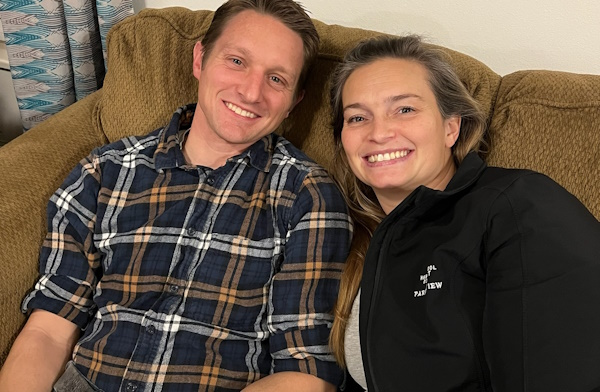

TOP SECRET - MOTIVE!!!
|  |

|
Professor and Lady Plum:
"They saw too much—one of my experiments, something I hadn’t perfected yet. The Hines couple didn’t understand the significance of my work, and they threatened to expose me. Lady Plum, always thinking ahead, came up with a plan. We didn’t want to hurt anyone, but they left us no choice if we wanted to preserve our future."
Encountering Ghosts
When a ghost appears, it’s time for an impromptu lecture.
Professor Plum, dive into an elaborate explanation of “ghostology,” scribbling imaginary equations in the air and theorizing about ectoplasmic physics.
Lady Plum, add historical context and discuss the ghosts’ “place in history” as if you’re writing a dissertation.
Don’t stop your scholarly banter until the ghost exits.
When you Encounter Other Guests
Professor Plum, every time you pass someone, point at them and say, “Did you know ghosts are drawn to people who look like you?”
Lady Plum, add with an air of mystery, “Be careful—they’re always watching!